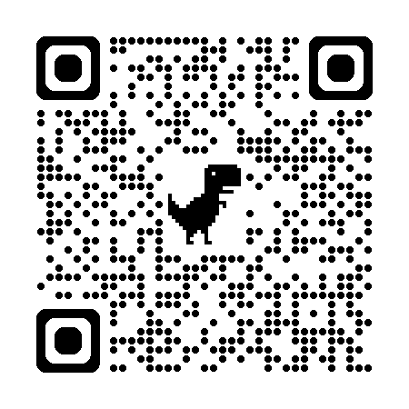

Unit 6 — CA Practice 3
Presented by Rebecca Tang
You are Rachel Wong, a digital marketing officer at InnoNation Tech. You are at a company event. Hold a conversation with your colleague, Marcus Leung (Student B, an IT support specialist). You should perform all items below:
You may talk about:
• what has been done so far
• plans for the coming months
Four-day work week policy: Your company has just introduced a four-day work week. Employees now work from Monday to Thursday only, with longer working hours each day.
You may talk about:
• what you think or feel about the policy and why
• the potential benefits and drawbacks the policy may bring to the company and its employees
You are Marcus Leung, an IT support specialist at InnoNation Tech. You are at a company event. Hold a conversation with your colleague, Rachel Wong (Student A, a digital marketing officer). You should perform all items below:
You may talk about:
• what has been done so far
• plans for the coming months
Four-day work week: Employees now work from Monday to Thursday only, with longer working hours each day.
You may talk about:
• what you think or feel about the policy and why
• the potential benefits and drawbacks the policy may bring to the company and its employees
| Student A — Rachel Wong | Student B — Marcus Leung | Communicative Functions & Language Explanations |
|---|---|---|
| 1. Greet your colleague and introduce yourself | ||
'Hi. I don't think we've met yet. I'm Rachel Wong from the digital marketing department. It's nice to meet you.' |
'Hi, Rachel. I'm Marcus Leung from the IT department. It's nice to meet you too. How are you enjoying the event so far?' |
Greeting · Introducing yourself · Making small talk (follow-up Wh- question) |
'It's quite nice, thanks. It's a good chance to relax and talk to people outside the usual team. How about you?' |
'Yes, I'm enjoying it too! always learn something new when I talk to people from different teams.' |
Responding to small talk · Giving a general positive comment |
| 2. Make small talk on the following topics (continued) | ||
'You're right. It's amazing how much we can learn from each other's work experiences.' |
'Speaking of learning new things, have you been using any useful apps or tools for work lately?' |
Agreeing · Transitioning to a new small-talk topic · Asking about recent tools |
| a. A useful app or tool you've been using for work lately | ||
'Yes! I've been using a new AI writing assistant called Clyde. It helps me to draft social media captions and campaign ideas faster. What about you?' |
'That's impressive! I've been using a new task management tool called FocusGrid. It's really good for organising my tasks and keeping all my notes in one place. It saves me a lot of time.' |
Describing a recent tool (ongoing use) · Giving positive comment · Echoing |
'That sounds very useful! I'll have to try it sometime.' |
'So, what's your department working on these days?' |
Echoing with adjective · Showing future intention · Transitioning to work project (Wh- question) |
'We're currently working on improving the authentication login system of the staff intranet. We've completed the new design and started testing with a small group of users. In the coming months, we plan to fix the remaining issues and roll it out to all staff by the end of the year. We're also preparing training materials for everyone.' |
Talking about work project — three stages |
|
'Sounds like a solid plan. It should make logging in much smoother and more secure.' |
'That's right. What about your department?' |
Giving a positive comment · Expressing expectation (modal should) · Asking follow-up (Wh- question) |
'We're promoting the company's new AI-powered content creation tool through social media. We've already created several short videos and run some targeted ads. The engagement so far has been quite encouraging.' |
'Nice! What are your plans for the coming months?' |
Describing department project · Asking about future plans |
'We plan to create a full content series, including more tutorial-style videos and user testimonials. We also want to collaborate with a few industry influencers to do live demos and reviews. Hopefully this will help us reach a wider audience and increase sign-ups.' |
'That sounds like a well-thought-out plan.' |
Talking about future work · Giving a positive comment |
| 3. Share your opinion on a new company policy — Four-day work week | ||
'By the way, what do you think of the new four-day work week?' |
Transitioning (By the way) · Inviting opinions |
|
'I'm quite excited about it, actually. I think it's a great idea because it gives us much better work-life balance. Having Fridays off should help us recharge properly, even though the daily hours from Monday to Thursday are a bit longer. I also think it could boost our creativity and productivity during those four working days.' |
Expressing personal feeling (I’m excited) + opinion (I think) · Giving reasons (cause: because) · Stating effects (should/could) |
|
'I agree. Having Fridays off should help us feel more refreshed. However, there might be some drawbacks too. The longer daily hours might be tiring at first, and teams that need daily coordination, such as the customer service team, might find it challenging to adjust to the compressed schedule.' |
Agreeing · Stating effects (should) · Introducing drawbacks with examples |
|
'That's a valid concern. The longer days will take some time to get used to, and we'll need careful planning and good communication to make sure everything runs smoothly. But overall, I think the benefits outweigh the drawbacks. Employees will likely be more motivated.' |
Validating concern · Expressing overall opinion · Predicting result |
|
'I think so too. It might also help the company attract and retain talent in today's competitive job market. Many companies are exploring flexible work arrangements like this.' |
Agreeing · Elaborating benefits (effect) · Giving example |
|
| 4. End the conversation politely | ||
'Exactly. Well, Marcus, it's been great chatting with you. I've enjoyed learning more about your department and your thoughts on the new four-day work week. It shows the company cares about our well-being.' |
Wrapping up · Showing appreciation · Present perfect for experience |
|
'Likewise, Rachel. It was good to catch up. Let's talk again soon.' |
Responding politely · Echoing · Suggesting future contact |
|
'Absolutely! Enjoy the rest of the event.' |
Agreeing · Ending with good wishes |
|
'You too, Rachel. Take care and see you around!' |
Responding to good wishes · Ending politely |
|
Watch the suggested conversation between Rachel and Marcus.